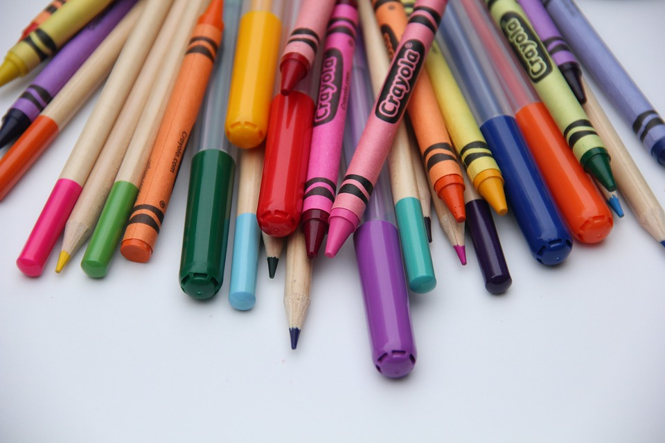
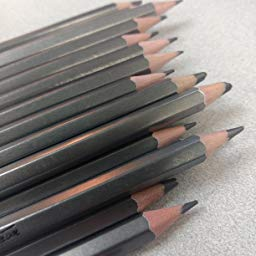

Art Supplies
Crayons, Colored Pencils, and Markers
Has all sorts of utensils. Including pens, pencils, coloring pencils, crayons, etc.
Pencils in different sizes (2b,4b,2h,4h,HB)
Also has different sizes of such utensils. 2b, 4b, 6b, 2h, 4h, 6h, etc.

Anthony Kalell II
(567)661-0294
anthonykalell@gmail.com
(567)661-0294
anthonykalell@gmail.com